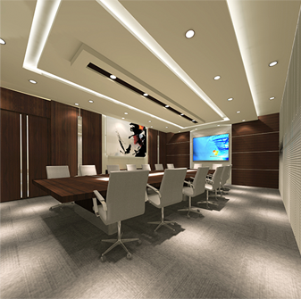
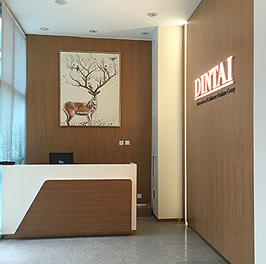

北京鼎泰时尚科技股份有限公司，是以羊绒生产、贸易为主业的综合性集团公司，公司成立于2001年。
鼎泰时尚秉承一贯的“品质第一、精益求精”的经营和生产理念，严把原料关、严控工艺关，将羊绒服装制品打造出国内难以企及的高度，获得了国际知名服装同行的认可。
目前，鼎泰时尚已拥有高、中、低档三个品牌，丰富的产品线为我们拓展市场打下了坚实的基础。同时引进优秀专业人才，涵盖了服装设计、工艺、质检、外贸、形象管理等重要环节。在新的市场环境下和可展望的将来，鼎泰必将实现突破性的发展，在国际和国内羊绒市场都取得优异成果。
公司在内蒙古、重庆、新疆、意大利分别设有不同类型的生产工厂，可以满足各种针型和最为严苛的对原材料和生产工艺的要求，公司除为国际著名服装品牌代工外，旗下自有品牌Braemar (London)、Braemar Kids、PIAZZA CASTELLO (Milano)和SCOTTSDALE(Scotland)羊绒制品在英国、意大利、法国均有销售，是国际高品质羊绒的代表之一。鼎泰时尚在保持国际市场地位的同时，亦将目光瞄准国内消费市场，创立了“格尔勒图”品牌。

